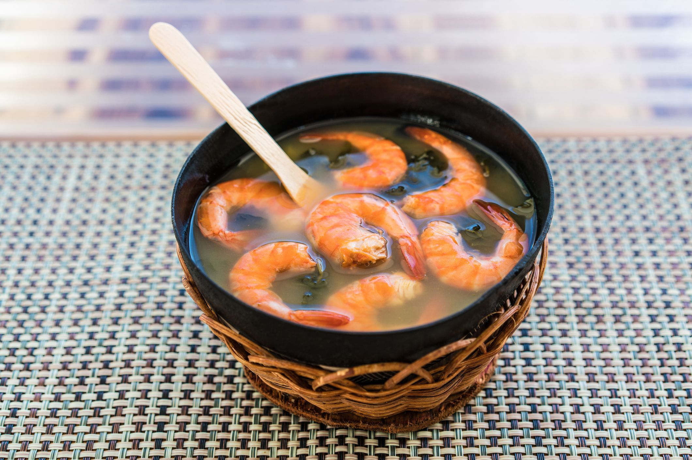
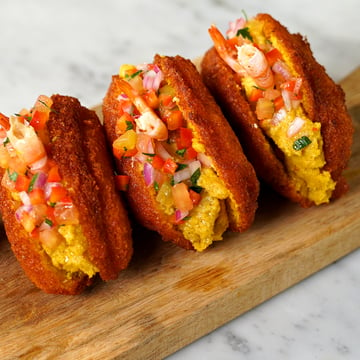
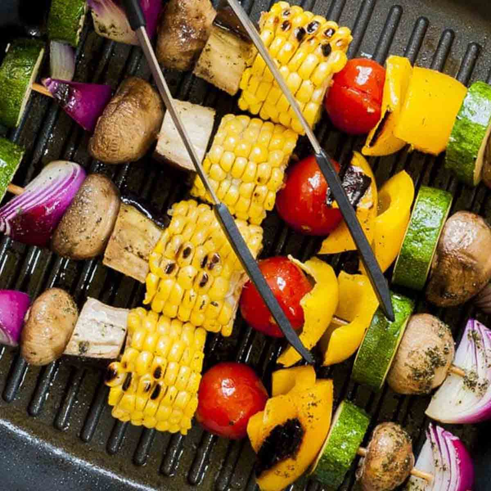
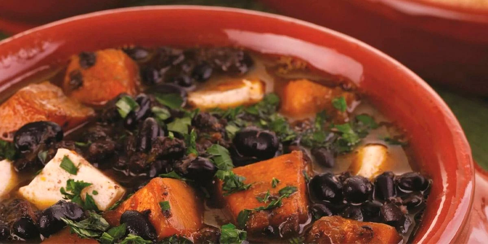
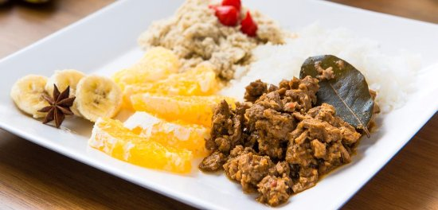

Seja muito bem-vindo ao "Comidinhas Brasucas"! Neste site, você embarcará em uma deliciosa jornada gastronômica pelas riquezas culinárias das diversas regiões do Brasil. Das paisagens exuberantes do Norte às praias deslumbrantes do Nordeste, passando pela rica diversidade do Centro-Oeste, pelas tradições do Sudeste e pelo charme do Sul, cada cantinho do nosso país tem algo especial a oferecer à mesa. Prepare-se para descobrir sabores únicos, temperos marcantes e receitas tradicionais que fazem da culinária brasileira uma das mais ricas e diversificadas do mundo. Estamos ansiosos para compartilhar essa experiência deliciosa com você. Bom apetite!
As campeãs de cada região
-
Norte
Tacacá
Uma sopa de tucupi com jambu, camarão seco e goma de tapioca, com um sabor único e marcante da região amazônica.
-
Nordeste
Acarajé
Bolinho frito feito de feijão-fradinho e cebola, recheado com vatapá, caruru, camarão seco e pimenta, uma delícia da culinária baiana.
-
Centro-Oeste
Pintado na brasa
Peixe típico da região assado na brasa, acompanhado de mandioca cozida e um delicioso molho de pimenta.
-
Sudeste
Feijoada
Um prato tradicional brasileiro, composto por feijão preto cozido com carnes diversas, servido com arroz, couve, farofa e laranja.
-
Sul
Barreado
Prato típico do litoral paranaense, feito com carne bovina cozida lentamente em panela de barro com diversos temperos, servido com farinha de mandioca.